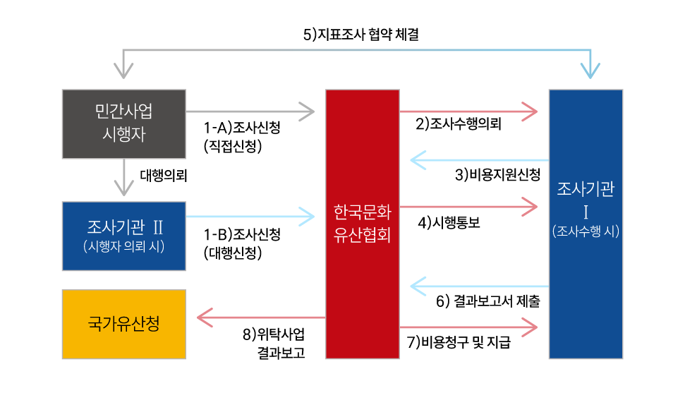
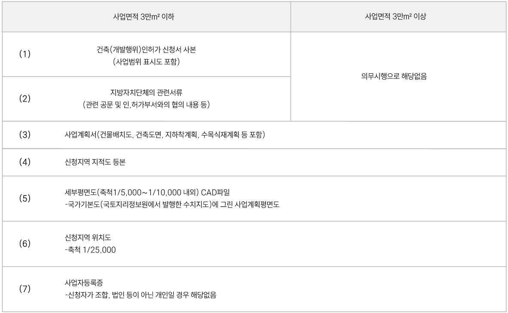

국비지원 지표조사
우리나라의 문화유산 정책의 기본원칙은 원형보존에 있는 만큼 개발에 앞서 문화유산 지표조사를 실시하여 문화유산 보호와 개발을 조화롭게 이뤄나가고자 합니다. 매장유산 조사비용은 원인자(사업시행자) 부담원칙을 채택하고 있으나, 국가유산청에서는 전국 각지에서 개인 및 영세사업자가 지불해야 할 비용의 부담을 해소하기 위하여 지원대상 및 절차에 대하여 법률로 정하여 일체의 경비를 지원하는 "지표조사 국비지원 사업"을 운영하고 있습니다.
지원근거
매장유산 보호 및 조사에 관한 법률 제7조(지표조사 절차 등) 및 시행령 제5조(지표조사 절차 등)
지원대상
모든 민간 시행 건설공사(면적 제한 없음)
진행절차
1. 신청인이 지표조사기관 선정 및 신청서 작성, 제출
- 신청인은 조사기관을 선정한 후 국비지원 지표조사 신청서(구비서류 포함)를 작성 및 제출
※ 신청인이 한국문화유산협회에 직접 신청하는 경우도 가능
2. 조사기관이 문화유산 전자행정 시스템(국가유산 협업포털) 업무처리 절차 안내
- 조사기관은 신청인에게 문화유산 전자행정 시스템 등록 및 사업 신청 등 업무처리 절차 안내
- 문화유산 전자행정 시스템(국가유산 협업포털) 등록 및 사업신청(신청인)
- 사업신청 검토 및 승인(국가유산청, 지자체)
3. 조사기관과 신청인은 반드시 지표조사 국비지원 협약 체결
- 지표조사 국비지원 협약서 체결은 조사 착수 전에 체결하는 것을 원칙으로 하며, 협약 체결 후 지표조사 착수
- 협약서 체결 시 협약내용(특히 제9조 조사비용의 환수)을 조사기관의 책임조사원이 신청인에게 설명
4. 지표조사 착수
- 조사기관은 관할 지방자치단체의 장에게 지표조사 착수신고서 제출 및 행정절차 이행(국가유산 협업포털)
- 지표조사 수행(조사기관)
5. 조사완료 시 보고서 제출 및 업무처리 절차 안내(조사기관)
- 보고서 제출 및 문화유산 전자행정 시스템 업무처리(신청인)
- 보고서 검토 및 문화유산 보존 조치 결과 통보(지자체)
업무처리흐름도

국비지원 신청 시 구비 서류

{kind=link}
국비지원 발굴조사
우리나라의 매장유산 정책의 기본원칙은 원형보존에 있는 만큼 개발로 매장유산을 파괴하거나 보존 및 활용이 불가능한 상태로 만들 경우, 최소한의 기록보존을 위해 발굴조사를 실시하여야 합니다. 따라서 조사비용은 원인자(사업시행자) 부담원칙을 채택하고 있습니다. (매장유산 보호 및 조사에 관한 법률 제11조)
국가유산청에서는 전국 각지에서 개인 및 영세사업자가 매장유산 유존지역에서 단독주택, 농어업시설, 개인사업자의 건축물, 공장을 추진할 경우(지원대상 참조) 일정 규모 이하의 건설공사 시 매장유산 조사를 국가가 지원하여 경제적 부담을 경감하고 효과적인 매장유산 보존 및 관리를 도모하기 위해 국비지원 발굴조사를 운용합니다. 국비지원 발굴조사 사업은 사회적 가치 증진을 목적으로 하는 복권 기금의 지원으로 운용되는 사업입니다.
진단조사
- 매장문화유산 유무를 판단하는 진단적 성격의 조사로 표본조사, 시굴조사로 구분
- 건축 용도 및 면적에 따른 지원여부
- 건축 용도 및 면적에 따라 진단조사와 소규모 발굴조사로 구분

소규모발굴조사
- 표본조사, 시굴조사, 정밀발굴조사로 구분
- 건축 용도 및 면적에 따른 지원 여부 확인

- 표본 및 시굴조사 결과에 따라 정밀발굴조사 진행 시 최대 지원금액은 1억 5000만원 이내에서 지원
- 진단조사 지원의 범위는 「건축법 시행령」제3조의5〈별표1〉준용
소규모 발굴조사와 진단조사 구분표

- 지원근거
「매장유산 보호 및 조사에 관한 법률」 제11조 제3항
「매장유산 보호 및 조사에 관한 법률」 시행령 제10조
「발굴조사의 방법 및 절차 등에 관한 규정」 시행령 제9조(국비지원 발굴의 수행)
「국가유산보호법」제9조 제3항 제3호(국가유산진흥원의 설치)
「발굴조사의 방법 및 절차 등에 관한 규정」제7조
- 진행절차
- 민원인(개인, 개인사업자, 농어업인 등)은 건설사업 시행 이전, 국비지원 발굴조사 지원 대상인지를 해당 지자체 또는 국가유산진흥원에 문의 확인.
- 국가유산진흥원 매장유산 매장유산조사안내 국비발굴단에서 신청서를 다운받아 작성하여 제출(국비지원 사업은 국가유산진흥원에서만 진행함)
- 이후, 발굴허가 신청 등 행정처리는 안내받은 대로 진행, 발굴조사는 국가유산진흥원에서 진행함.
- 국가유산진흥원 매장유산 국비발굴단 지역별 문의

- 지원의 제한
- 국비지원 발굴조사에 해당하는 건설공사의 경우 건설사업 시행자와 발굴허가 신청자가 동일해야 하며 발굴조사비용 지원은 1인당(법인포함) 1회로 함.
- 건축주와 토지소유주가 다른 경우, 건축주와 토지소유주 모두 국비지원을 받은 것으로 함.
- 소규모 발굴조사 또는 진단조사를 지원받은 토지는 분할 등을 통해 중복하여 지원받을 수 없음.
- 건축 용도 및 면적에 따라 진단 조사와 소규모 발굴조사로 구분
※ 소규모 발굴 조사비용 환수
「보조금 관리에 관한 법률」제30조 및 제33조의2에 의거하여 다음의 경우 조사비용을 환수할 수 있음
「국비지원 발굴조사 업무매뉴얼」제3조 및 제7조를 위반하여 지원받은 경우
[소규모 발굴조사로서 다음 각 목에 해당하는 경우]
- 발굴조사 후 설계변경, 명의변경, 대지 미분할 등으로 실제 건설공사가 국비 지원기준에서 위반하여 준공 또는 증축된 경우.
- 건축물 사용승인 후 3년 이내 용도변경, 증축, 합필 등을 통하여 지원기준을 초과한 경우
- 발굴조사 국비를 지원받은 자가 3년 이내 건축물을 준공하지 않는 경우. 단, 국가유산청장은 재난, 천재지변 등의 예상할 수 없었던 사유로 인하여 준공기한을 연장할 필요가 있다고 인정하는 경우, 이를 연장할 수 있음.
- 발굴조사 착수 이후 국비지원 발굴조사 취하 신청서가 접수된 경우
- 그 외 거짓 신청이나 그 밖의 부정한 방법으로 소규모 발굴조사 비용을 지원받은 경우 「보조금 관리에 관한 법률」제40조 및 제41조에 따라 조치할 수 있음.